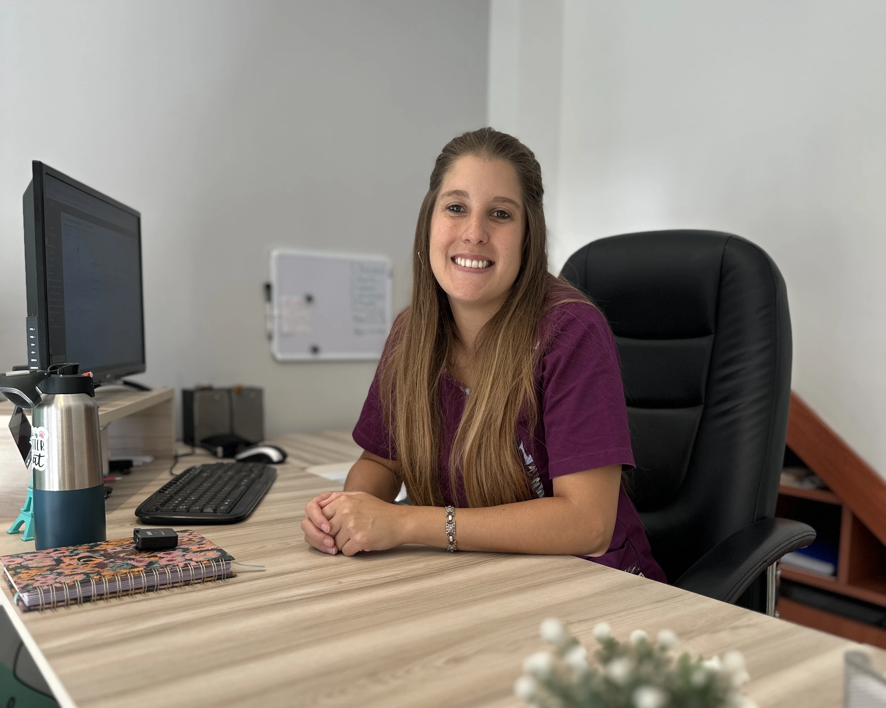
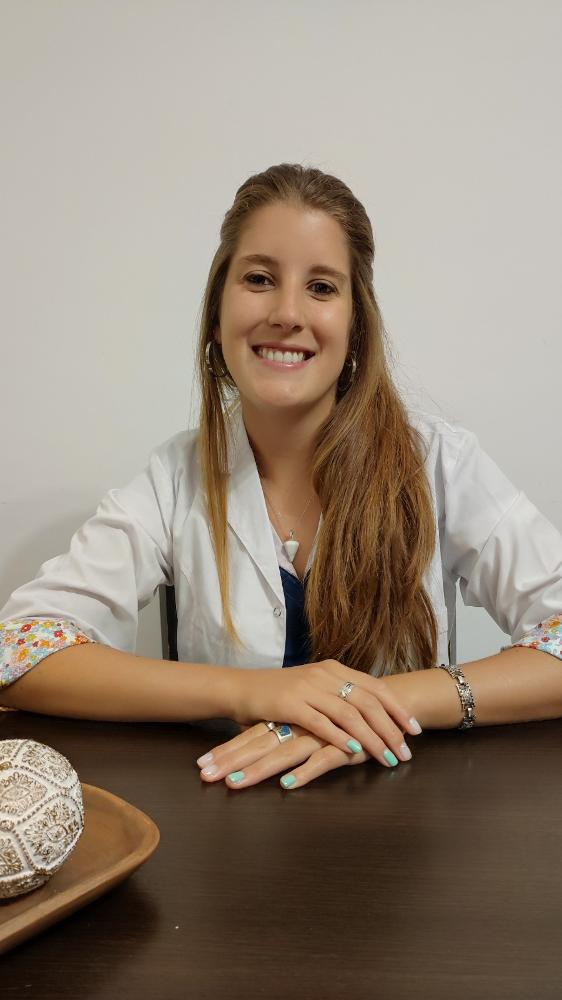
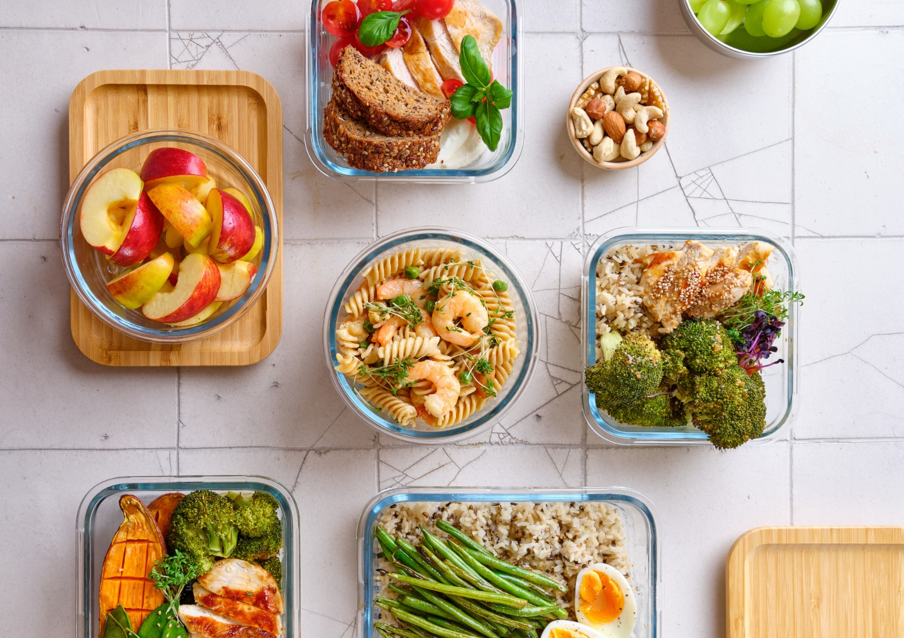

Mercedes
Martín
Elizondo
Licenciada en Nutrición
| M.P.: 4490
Decidí dedicarme a acompañar a mujeres durante su embarazo, en la búsqueda gestacional o en tratamientos de reproducción asistida...
Te acompaño de manera integral, porque somos un TODO.
Sobre mí
Después de algunos años de experiencia como nutricionista, decidí dedicarme a acompañar a mujeres durante su embarazo, en la búsqueda gestacional o en tratamientos de reproducción asistida. Porque entendí que ahí empieza nuestra salud – la de nuestros hijos en realidad. Sí, incluso desde mucho antes de gestar un embarazo… También sigo estudiando. Todo el tiempo. Porque me encanta. Y porque sé que es fundamental para seguir acompañando a mis pacientes con información clara y actualizada.


Mi forma de trabajar
Te acompaño de manera integral, porque somos un TODO. Nuestros hábitos de alimentación, el descanso, nuestra salud intestinal y hormonal están relacionadas 100%. A lo largo de las sesiones charlamos sobre todos estos factores y trabajamos con metas concretas que nos acerquen a tus objetivos de salud y maternidad. No hay dietas restrictivas acá. Mi misión es darte herramientas para que puedas sostener tus hábitos y transmitírselos a tu familia.